Роль: дизайн флоу и интерфейсов.
Формат: два концепта мобильных приложений, без разработки.
Memfit — концепт приложения для тренировок, где за активность пользователь получает memcoins. Главный экран собирает всё нужное для старта: награду, кнопку тренировки, статистику недели и обучающее видео.
Профиль подсказывает, что ещё заполнить: предпочтения по еде и подключение TON-кошелька. Рядом прогресс достижений в процентах, баланс memcoins и раздел с новостями и статьями.
Перед тренировкой на карте идёт обратный отсчёт 3, 2, 1, GO. Во время бега остаются крупные время, дистанция, темп и пульс и две кнопки, Resume и Finish.
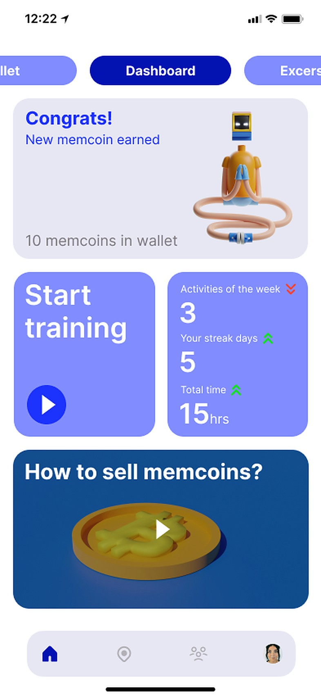
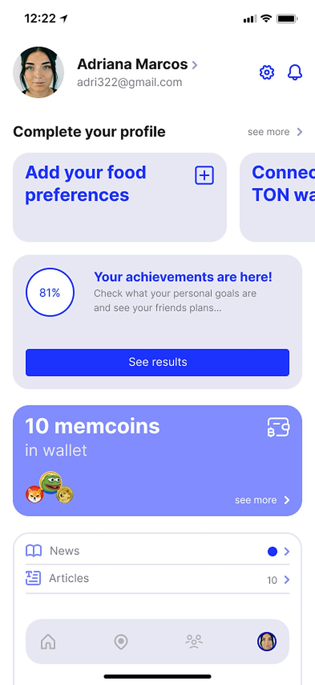
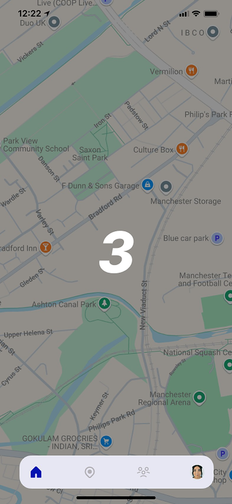
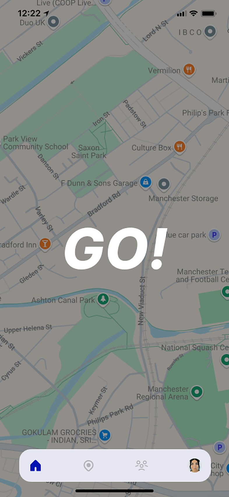
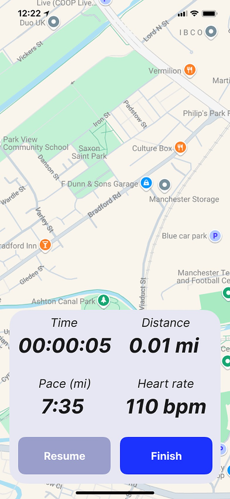
TEMPi — концепт сервиса, где исполнители находят подработку со сменным графиком рядом с домом, а заказчики — людей на смену. Здесь собран флоу регистрации исполнителя: от первого экрана до списка профессий.
Собрал флоу из восьми экранов и состояний. Вход объединяет почту и телефон на одном экране, а номер подтверждается звонком: пользователю достаточно ввести последние четыре цифры входящего номера.
Дальше пользователь выбирает роль и заполняет данные. Поля подсвечиваются по состоянию, а требования к паролю подписаны под полем, поэтому ошибку видно сразу, а не после отправки формы.
На последних шагах задаётся город и радиус поиска на карте, затем профессии, которые интересны исполнителю. На их основе приложение предлагает вакансии. Палитру и состояния компонентов собрал в общую систему, чтобы экраны выглядели единым продуктом.
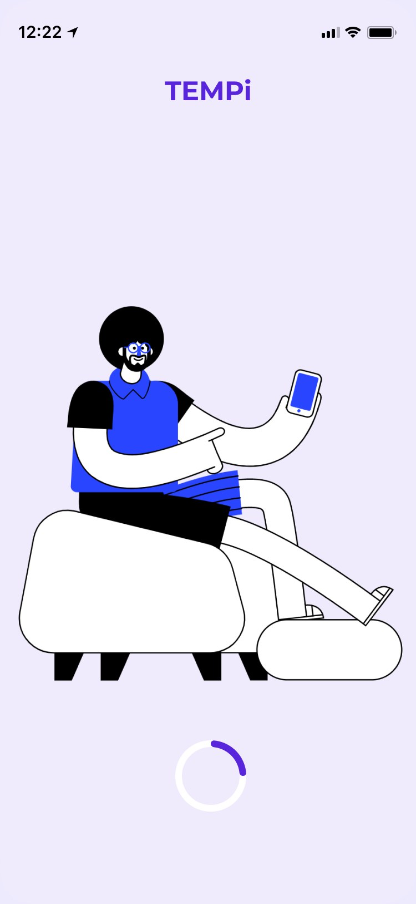
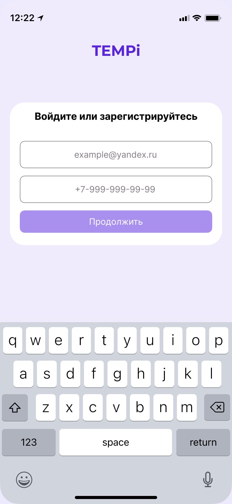
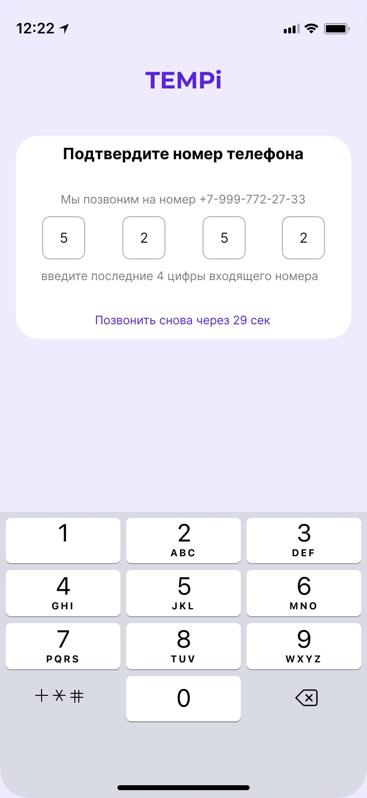
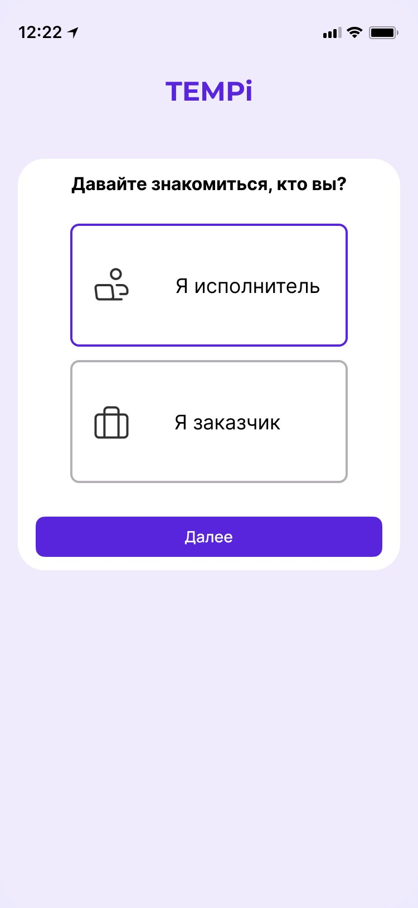
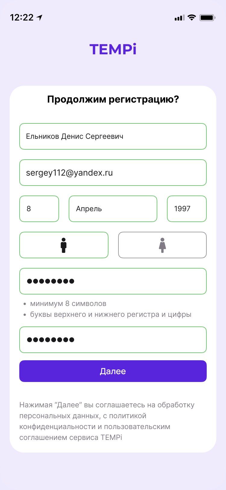
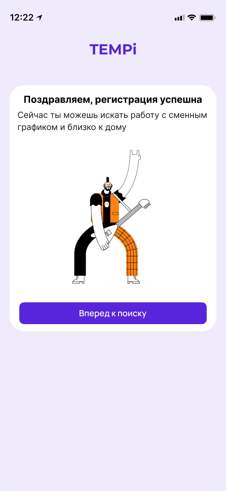
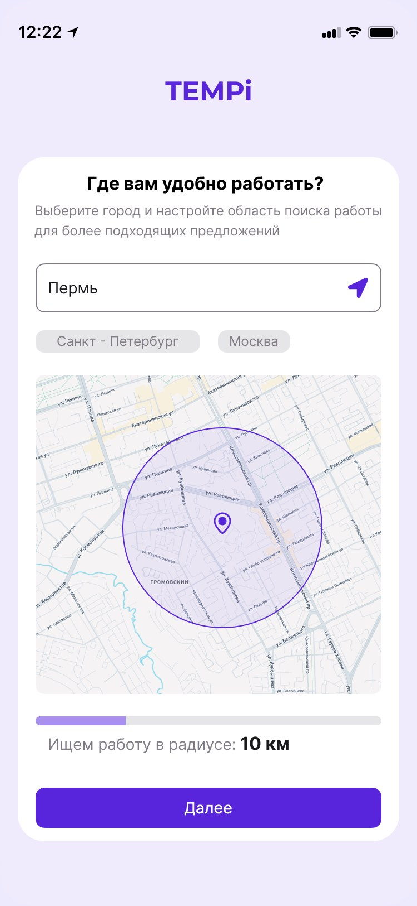
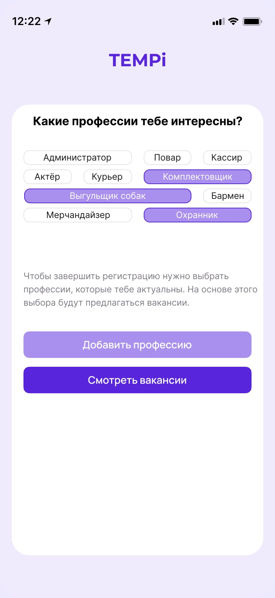